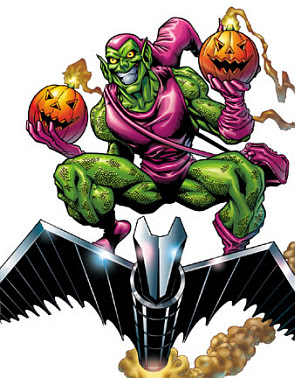
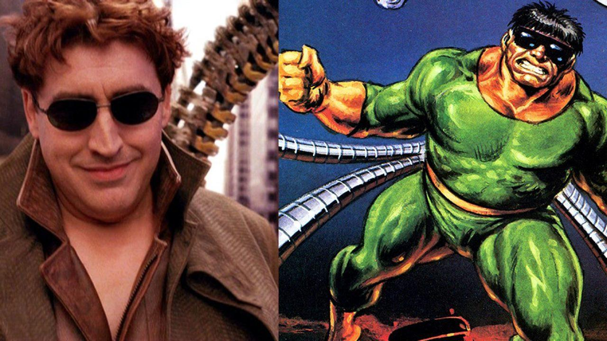
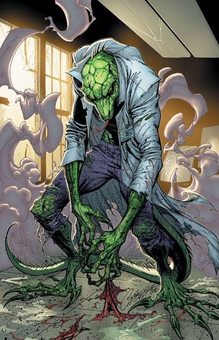
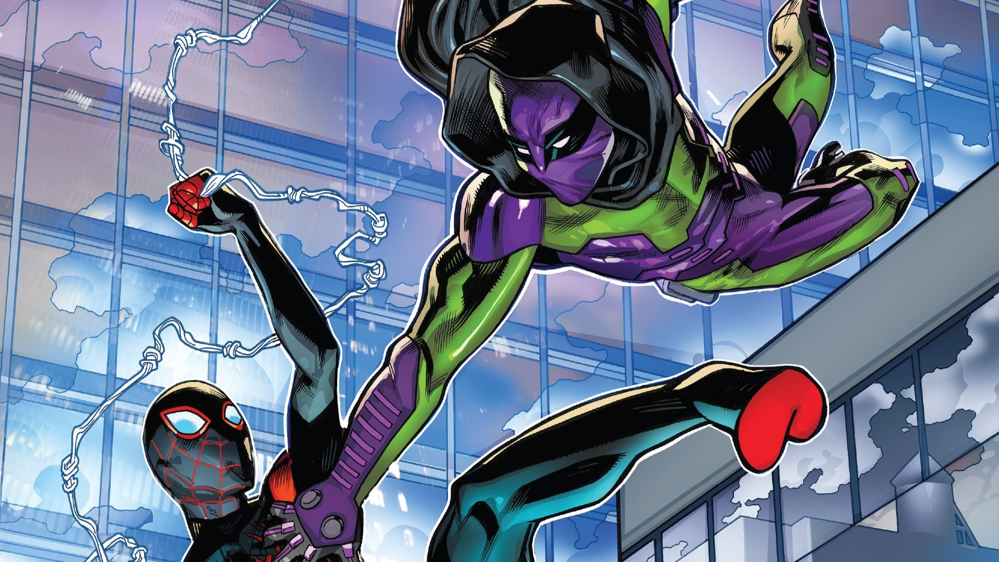
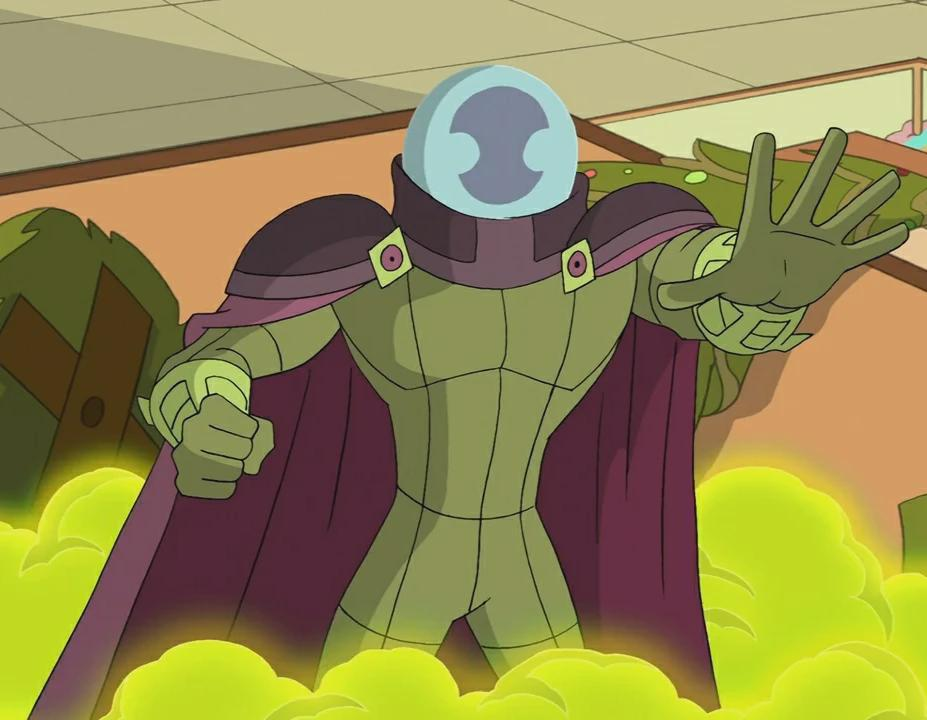
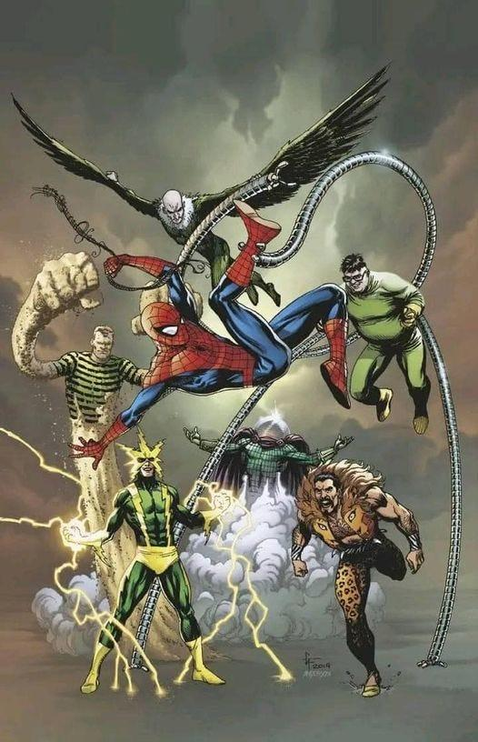

Galeria de vilões do aranhaverso

O Aranhaverso não é marcado apenas pelos diferentes Homens-Aranha,
mas também pelos vilões que desafiam cada herói em universos distintos.
De ameaças monstruosas como Venom até gênios perigosos como Doutor Octopus,
cada inimigo possui sua própria história, motivações e legado dentro da Marvel.
Venom, Duende Verde, Doutor Octopus, Prowler e o temido Sexteto Sinistro
atravessam dimensões deixando um rastro de destruição por onde passam.
Cada vilão carrega uma história marcada por poder, tragédia e confronto.

Considerado um dos maiores inimigos do Homem-Aranha, o Duende Verde é a identidade
sombria de Norman Osborn, um empresário brilhante consumido pela loucura após um
experimento científico. Utilizando tecnologia avançada, bombas explosivas e seu
icônico planador, o vilão se tornou uma ameaça mortal em diferentes universos do
Aranhaverso.
Inteligente, manipulador e extremamente perigoso, o Duende Verde marcou a história
do Homem-Aranha ao causar perdas irreversíveis e transformar batalhas pessoais em
verdadeiros pesadelos.

Doutor Octopus, também conhecido como Otto Octavius, é um cientista genial que teve
sua vida transformada após um acidente envolvendo braços mecânicos experimentais.
Com inteligência extraordinária e tecnologia avançada, o vilão se tornou um dos
adversários mais perigosos do Homem-Aranha.
Frio, estratégico e movido pela obsessão de provar sua superioridade, Doutor Octopus
liderou grandes ameaças do Aranhaverso, incluindo o temido Sexteto Sinistro,
tornando-se uma das mentes mais brilhantes e perigosas da Marvel.

Nascido da união entre um simbionte alienígena e Eddie Brock, Venom é uma das figuras
mais icônicas e perigosas do universo do Homem-Aranha. Alimentado pelo ódio e pela
sede de vingança, o simbionte concede força sobre-humana, velocidade e habilidades
assustadoras ao seu hospedeiro.
Com aparência monstruosa e personalidade imprevisível, Venom transita entre vilão e
anti-herói no Aranhaverso, tornando-se uma ameaça brutal capaz de enfrentar até os
inimigos mais poderosos da Marvel.

O Lagarto é a forma monstruosa do cientista Curt Connors, que tentou criar uma cura
revolucionária utilizando DNA reptiliano. O experimento acabou saindo do controle,
transformando-o em uma criatura poderosa e selvagem.
Com força brutal, regeneração avançada e instintos perigosos, o Lagarto se tornou
uma ameaça aterrorizante no Aranhaverso, colocando o Homem-Aranha diante de batalhas
intensas entre ciência e monstruosidade.

Flint Marko, conhecido como Homem-Areia, ganhou poderes após um acidente envolvendo
partículas experimentais que transformaram seu corpo em areia viva. Capaz de mudar
de forma e criar armas gigantes, ele se tornou um dos inimigos mais imprevisíveis
do Homem-Aranha.
Entre crimes, conflitos pessoais e momentos de redenção, o Homem-Areia marcou o
Aranhaverso como um vilão poderoso, capaz de enfrentar heróis com sua força brutal
e habilidades praticamente indestrutíveis.

Aaron Davis, conhecido como Gatuno, é um habilidoso criminoso do Aranhaverso e tio
de Miles Morales. Utilizando uma armadura tecnológica avançada, ele consegue se mover
silenciosamente pelas sombras, tornando-se um dos inimigos mais perigosos e furtivos
do Homem-Aranha.
Com habilidades de combate, tecnologia poderosa e uma personalidade misteriosa,
o Gatuno vive dividido entre o crime e os laços familiares, marcando sua presença
como um personagem sombrio e marcante dentro do universo Marvel.

Quentin Beck, conhecido como Mistério, é um especialista em efeitos especiais e
ilusões que utiliza tecnologia avançada para manipular a realidade ao seu redor.
Mestre da enganação, ele transforma medo e confusão em suas maiores armas contra
o Homem-Aranha.
Com truques psicológicos, hologramas e planos elaborados, Mistério se tornou um dos
vilões mais inteligentes e imprevisíveis do Aranhaverso, capaz de desafiar não apenas
a força do herói, mas também sua mente.

Formado pelos maiores inimigos do Homem-Aranha, o Sexteto Sinistro reúne vilões
extremamente perigosos em uma única aliança destrutiva. Liderados geralmente por
Doutor Octopus, o grupo combina inteligência, força brutal e tecnologia avançada
para derrotar o herói de uma vez por todas.
Considerado uma das maiores ameaças do Aranhaverso, o Sexteto Sinistro marcou a
história da Marvel ao transformar batalhas comuns em confrontos épicos entre heróis
e vilões.
Formado pelos maiores inimigos do Homem-Aranha, o Sexteto Sinistro reúne vilões
extremamente perigosos em uma única aliança destrutiva. Liderados geralmente por
Doutor Octopus, o grupo combina inteligência, força brutal e tecnologia avançada
para derrotar o herói de uma vez por todas.
Considerado uma das maiores ameaças do Aranhaverso, o Sexteto Sinistro marcou a
história da Marvel ao transformar batalhas comuns em confrontos épicos entre heróis
e vilões.
O Aranhaverso continua...
aranhaverso